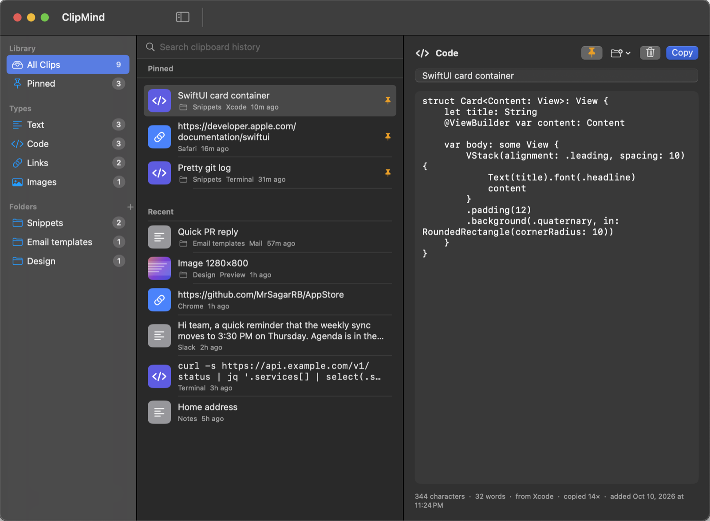

Remembers everything
Text, code, links and images are captured automatically and sorted by type. Duplicates are merged, not repeated.
ClipMind remembers the text, code snippets, links and images you copy — so you can search them, pin the ones you reuse and keep them organised in folders.

Everything you need to find, reuse and organise what you copy.
Text, code, links and images are captured automatically and sorted by type. Duplicates are merged, not repeated.
Find any clip as you type. Matches the content, titles, the app it came from, and folder names. Press ⌘F to jump to search.
Pinned clips stay at the top and are never removed by the history limit — perfect for snippets you paste daily.
Group clips into folders. Drag a clip onto a folder, or right-click → Move to Folder. Give snippets a title and edit them in place.
Press ⌘⇧V in any app to open the quick panel from the menu bar. Type to filter, use the arrows, press Return to copy.
History lives only on your Mac. Anything flagged as concealed by a password manager is never recorded.
Grab ClipMind.dmg and open it. It mounts like a normal disk image.
Drop ClipMind onto the Applications folder shown in the window, then eject the disk.
Open ClipMind from Launchpad or Spotlight. It lives in your menu bar.
First launch: ClipMind isn’t notarized by Apple yet, so macOS may block it the first time. Right-click the app → Open → Open (or allow it under System Settings → Privacy & Security). You only do this once.
Download ClipMind and never re-type or re-find something you’ve already copied.